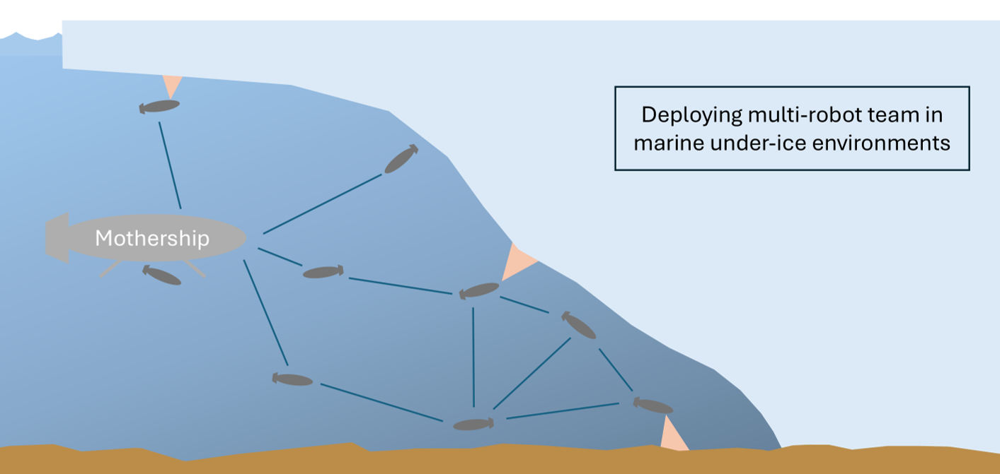

Hybrid Decentralization for Multi-Robot Orienteering with Mothership-Passenger Systems

Overview
We present a hybrid centralized-decentralized planning algorithm for a multi-robot system consisting of a Mothership robot and multiple Passenger robots. In this system, the Passenger robots execute tasks while the Mothership provides support. This paper addresses the challenge of planning Passenger robot movements, framing it as a Stochastic Multi-Agent Orienteering Problem (SMOP) complicated by factors like stochastic operational efforts and disruptive events. We optimize the task completion efficiency of the system by combining centralized solutions from the Mothership with local plans from Passengers to enhance system resilience. Our contributions include defining the SMOP, developing a solution using Decentralized Monte Carlo Tree Search, presenting a hybrid algorithm that integrates centralized plans into the distributed framework, and evaluating the algorithm’s performance in a simulated environment. Our results show that our hybrid approaches outperform fully centralized and fully distributed algorithms in highly-dynamic scenarios with up to a 26.6% increase in task completion efficiency over baseline methods.